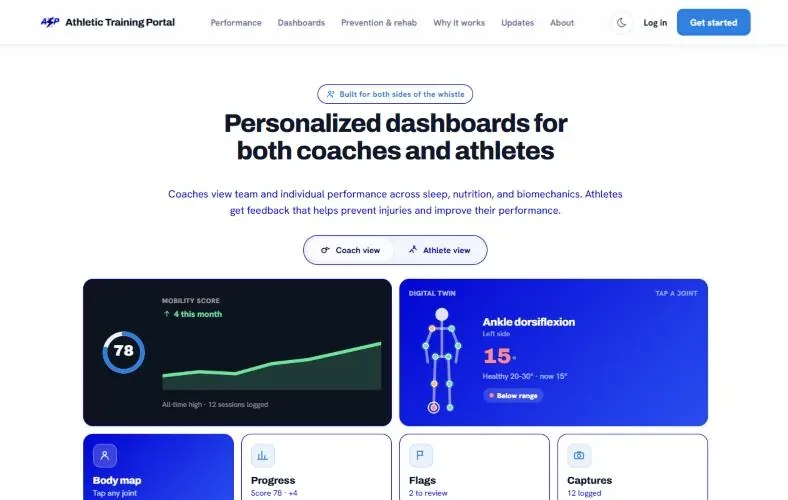
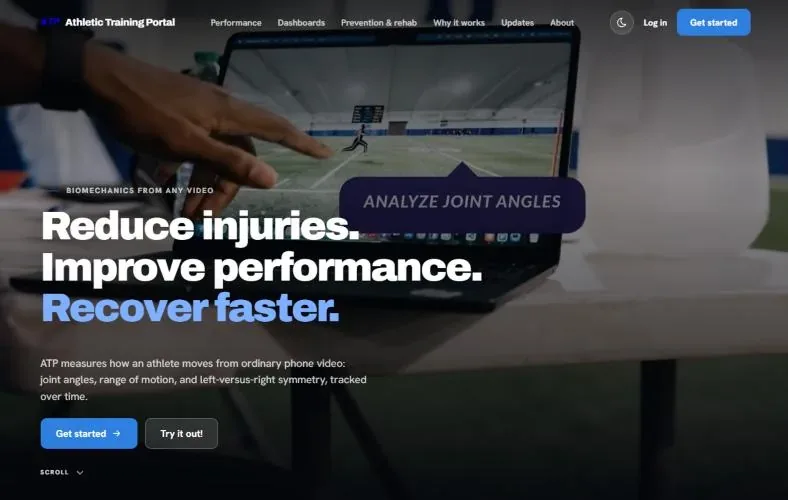
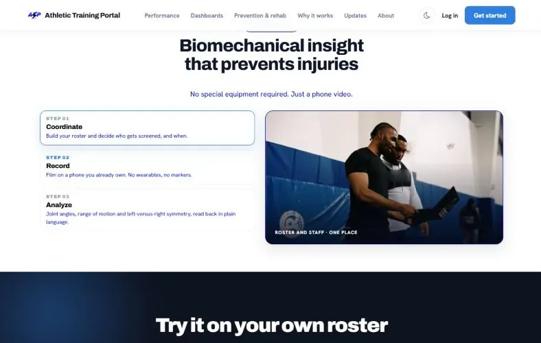
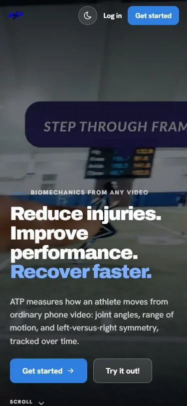

01The problem
Measuring how someone moves usually takes expensive, specialized equipment. ATP does it with a phone, which makes it a lot more accessible, but it means the interface has to do a lot of the work. There's a ton of data: angles at every joint, range of motion, and left vs. right comparisons, all changing frame to frame and session to session.
It also has to make sense to very different people. Coaches want to know who on the team needs attention. Athletes want feedback they can actually do something with. Trainers and clinicians want to catch a joint heading toward injury and then follow it through rehab.
02My role
As Chief Experience Officer, I coordinated and developed ATP's landing page and athlete mobile view, and I lead our marketing strategy team. I also built the system that draws performance and biomechanics data onto live training video.
03Video to skeleton
We wanted people to trust what they were seeing. Putting the original clip right next to the tracked skeleton lets coaches and athletes check the tracking with their own eyes before they look at any numbers.
04Design decisions
Coaches see who needs attention first
The coach view opens with a short "Needs attention" list showing each athlete, what the issue is (like 18% knee asymmetry), and a readiness score, color-coded by how serious it is.
Coaches are responsible for a whole roster and don't have time to click into every athlete. Showing who needs a look, and why, helps them catch problems early.
Explaining the numbers
Trends are shown against a shaded healthy range, with a short "What it means" note and a next step, like re-recording within a week.
Most coaches and athletes aren't biomechanists, and a joint angle on its own doesn't mean much. Putting it next to a healthy range and explaining it in plain language gives them something they can act on.
Keeping the athlete view simple
On a phone, athletes get one mobility score, a digital twin of their body they can tap on, and four places to go: body map, progress, flags, and captures.
Athletes are usually checking this on their phone between other things, so I wanted the important stuff to be a quick glance away.
05Screens






Screens from atp-data.com.
06Real-time visualization
I built a modular system in Python, using OpenCV and PIL, that draws performance and biomechanics data onto live training video. Each piece of the UI is its own widget, so it's easy to add or change things. I used NumPy broadcasting for the gradients and exponential moving-average smoothing so the numbers don't jitter.
7 FPS to 60+ FPS. Frame rate was the biggest problem. When I started, it was running at 7 FPS. I used AI to brainstorm ways to optimize it and got it running at over 60 FPS.
07Results
I helped our team land a $50K grant and four pilot programs with NCAA Division I teams, including Duke and North Carolina Central University.
When we needed to run agile sprints without paying for software, I built our own Jira-style tracker so design, engineering, and research could all work on the same schedule. There's more on that on my production page.